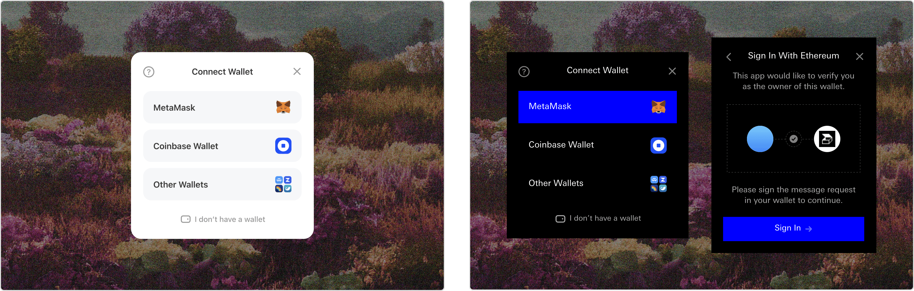

The main dashboard, where users can connect up to ten wallets, fill out their profile, and view their gallery of community tokens.
The challenge
CPG needed a custom product that would help them manage their web3 community. They wanted to:
- Activate community members through token staking and point incentives
- Connect members’ wallet addresses with web3 identities
- Engage members through traditional marketing channels
Users can log into a branded dashboard, create a profile, and stake community tokens. The app supports tokens on Ethereum, Polygon, and POAPs. Staking works like collecting interest in a bank account—by staking their tokens, members earn community points, accumulating daily. They can then use these points for rewards like physical merch, access to events, and early or exclusive access to product releases.
A video demo from an early build of the app.
The MVP of a social feature allowing users to find and follow other community members. It also provides an incentive for users to add their Twitter to their profile in order to be displayed. Starting with Twitter, this could be expanded to include other data—like tags for location, profession, and links to other social profiles—to serve as a directory and communication hub for members.
Graceful empty states for the profile. To view their gallery, users needed to “complete” their profile by adding an email address (left). If a user had no community tokens, they’d be presented with ways they could participate (right).
CPG’s community has three tiers, with membership held by NFTs:
- Genesis: launched in 2021, is an exclusive group of 333 founders, operators, creatives, and VCs
- Pop: launched in 2022 as a collection of 2,777 generative NFTs
- Free community chat: accessible by attending free online CPG events
We wanted to make sure the most valuable members felt the weight of their membership in their rewards points, but at the same time, allow anyone who cared to participate in free community events to sign up and be eligible for awards. As a result, higher tiered tokens earn significantly more points than free tokens.
Leaning into the points system, we added gamification features, like the ability to complete quests to earn additional points, and introduced levels to give a sense of progress and achievement.
Examples of potential quests.
Design explorations of how to display new quests.
Design explorations of how to display points and level progression.
Balancing web2 and web3 experiences
To reduce technical complexity and avoid security risks, we decided to go with a soft-staking approach. Traditional staking often requires multiple on-chain interactions that cost the user gas fees. More importantly, it also puts their NFTs at risk by locking them into a contract, out of their custody. If that contract were to be compromised, they’d lose their assets. Instead, users would soft-stake simply by issuing a gas-free signature using their wallet(s) that held the appropriate NFTs. This accomplished the goal of proving token ownership, but with a smoother staking experience.
WalletConnect’s default dialog (left), customized to fit the CPG brand (right).
Users can add up to ten wallets. All they need to do sign a message proving ownership.
Flow to unlink wallets, with additional friction added to ensure users understand the consequences of deleting.
Admin dashboard and points management
Community managers needed a way to manage their rewards program within the app, so we built an admin dashboard for them.
Here, they can add and remove tokens that are supported by the app, and importantly, manage the rewards structure around specific tokens. As they experimented with token drops and ensuing rewards, we learned a great deal about what works and what doesn’t—in particular, we learned about ways users could abuse rewards, and so we built safeguard features to prevent undesired behavior.
Adding a new collection that users can to earn points for holding. After entering the contract address, we automatically pull the remaining on-chain data to help the user verify they’ve entered the correct address.
Admins can customize how collections earn points, and add in safeguards to prevent misbehavior.
We added multiple levers for them to customize the rewards experience:
- Points type: allowing for monthly point accumulation or a fixed, one-time addition
- Points value: how many points users earn monthly or one-time
- Point overrides: allowing for more granular control over points for specific token IDs, in the event they want to assign greater value to certain tokens in a collection over others
- Holder limits: capping the number of tokens earning points in a collection, disincentivizing whale collectors from abusing the system
Admins can add POAPs by their Event ID, and view details for POAPs they’ve already added.
While CPG would occasionally release free new token collections, these were often high-effort productions. For recurring events like their weekly guest speaker series, they would more commonly issue POAPs, which made perfect sense as a lightweight solution. This allowed them to quickly give users an on-chain proof of attendance, and reward community participation. Rather than treating each POAP as its own collection, we lumped them into one collection that could be managed together.
Administrators can also download a raw data export of user data and their points, to be used for marketing segmentation, points analysis, or community events like raffles and giveaways.
Admins can invite other teammates, and manage their permissions.
Blanklabel customization
Member engagement is valuable to every web3 community. Because of this, we built the product with blanklabeling in mind. By allowing for a simple swap of colors and background assets, the app could be repurposed to fit any brand. This also opened doors for new revenue opportunities to sell the app as a loyalty SaaS.
Examples of branded blanklabel opportunities for other NFT communities.